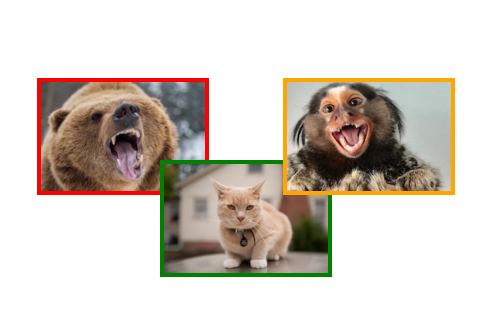

Your sketch:
This exercise builds on the 1 star exercise, so you will need to complete that exercise before beginning this one.
Your task is to extend the Animal class you wrote in the previous exercise with new functionality
described below. Start by copying the code and assets from the last exercise.
Some animals are dangerous, some are not. Your Animal class should have a way to
represent the dangerousness of an individual animal. You will definitely need a new attribute but you should decide:
Lastly, modify the display() method to create a visual representation of danger. The video below uses a simple coloured border. Feel free to be more creative!
There are no tests for this exercise as it is open ended.
Optional extension: consider using exceptions to ensure that code using your class sets dangerousness appropriately.
Example output (yours may be different, depending on your views on danger and how you want to represent it):

It is recommended that you make your new attribute private because there is no indication that users would want to use it themselves—it is only used when the animal is displayed.
If you would like to use exceptions, here is the documentation.